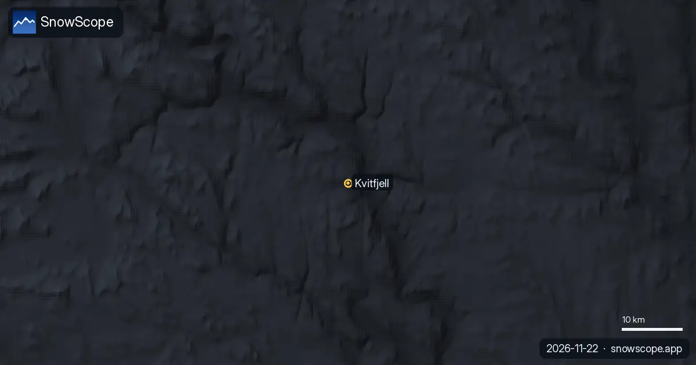

Kvitfjell snow depth by month: the World Cup hill's winter in numbers
Kvitfjell was built for the Olympic downhill and still hosts the World Cup speed races every winter, so its snow has to be right in late winter above all. The mountain rises from 184 m to 1038 m with 38 km of mapped runs on 14 lifts. Our 46-winter snow history shows a steady, cold-climate pattern: a slow start, a deep March, and a long tail into spring at the top.
See the live snow forecast for Kvitfjell in the SnowScope appSnow depth, powder alerts and the 3D map, free.

Season start: the first snow and the thin weeks
Mid-mountain (611 m) sees its first snow by October 15 in half of the past winters. November is usually thin, 22 cm at mid-mountain, and the base at 184 m is still mostly bare with 19 cm. December brings the first real cover: 47 cm at the base, 51 cm at mid-mountain, 55 cm at the top.
January to March: the speed-race months
January holds 75 cm at mid-mountain and 78 cm at the top. February and March are the heart of the winter, 82 and 84 cm at mid-mountain, 86 and 90 cm at the top. The race weeks in late February and early March fall right on the deepest part of the calendar.
The most reliable week at mid-mountain is ISO week 11, with a usual depth of 85 cm and at least 50 cm in every past winter. Mid-mountain keeps 50 cm or more for 11 weeks in nine of ten winters, and the typical winter peak there is 97 cm, between 66 cm in the leanest past winter and 136 cm in the richest.
A small mountain with a big base
Unusually for Norway, the base at Kvitfjell is almost as snowy as the middle: a typical peak of 95 cm against 97 cm at mid-mountain. The valley sits in a cold pocket of the Gudbrandsdalen, so the lower runs keep their snow long after the first thaws on sunnier hills. The top adds another step to 106 cm.
April and May: spring on the upper runs
April still shows 86 cm at the top and 74 cm at mid-mountain in a usual year, enough for Easter skiing. The last snow leaves mid-mountain by May 22 in half of the winters.
Month by month at three heights
In December a usual winter has 47 cm at the base (184 m), 51 cm at mid-mountain (611 m) and 55 cm at the top (1038 m). In January a usual winter has 72 cm at the base (184 m), 75 cm at mid-mountain (611 m) and 78 cm at the top (1038 m). In February a usual winter has 80 cm at the base (184 m), 82 cm at mid-mountain (611 m) and 86 cm at the top (1038 m).
In March a usual winter has 80 cm at the base (184 m), 84 cm at mid-mountain (611 m) and 90 cm at the top (1038 m). In April a usual winter has 64 cm at the base (184 m), 74 cm at mid-mountain (611 m) and 86 cm at the top (1038 m).
A poor winter and a rich winter
The spread matters as much as the middle. At mid-mountain, nine of ten past Marchs had at least 62 cm and one in ten had 114 cm or more; at the top the same range runs from 70 to 117 cm.
Over the whole winter the peak at mid-mountain ran from 66 cm in the poorest past winter to 136 cm in the richest, around a usual 97 cm; at the top from 69 to 137 cm around 106 cm. Snow lay on the ground at mid-mountain for 208 days in a usual winter, and the first snow of the season settled there by October 15 in half of the winters. These are model values for the area over 46 past winters, not resort measurements; they describe what to expect, not what the groomers will add.
What changed over 46 winters
The top's typical peak went from 106 cm in the first 15 winters of our record to 97 cm in the last 15; the base went from 100 to 94 cm. Days with snow on the ground at mid-mountain went from 212 to 194. Last winter's peak at mid-mountain was 80 cm.
Tips for skiers
- Late February and March are the weeks to book; the race calendar is no accident.
- December skiing relies on snowmaking on the lower runs; the natural cover is on the top half.
- Our depths are a model of past winters for the area, not the resort's measurements; lift status is on the official site.
References and credits
- Wikipedia, 'Kvitfjell', retrieved 22 November 2026: Olympic downhill venue, World Cup speed races. en.wikipedia.org/wiki/Kvitfjell
About these numbers
Snow numbers: SnowScope snow history, 46 past winters (1980-81 to 2025-26) at three heights of the resort, a model of the past corrected for height (an estimate for an area, not resort reports). Lift, run and access facts: the sources listed below, checked on the date shown.
Official avalanche bulletins: Varsom (NVE)
Cite this report
For research, teaching or the press: the numbers and charts are free to reuse under CC BY 4.0 with this citation.
SnowScope (2026), Kvitfjell snow depth by month: the World Cup hill's winter in numbers, https://snowscope.app/blog/en/2026/11/kvitfjell-snow-depth-world-cup-hill-by-month.html, accessed 2026-11-22
SnowScope (Atlas Labs). (2026, November 22). Kvitfjell snow depth by month: the World Cup hill's winter in numbers. SnowScope snow reports. https://snowscope.app/blog/en/2026/11/kvitfjell-snow-depth-world-cup-hill-by-month.html
BibTeX
@misc{snowscope2026kvitfjellsnowdepthworldc,
author = {{SnowScope (Atlas Labs)}},
title = {Kvitfjell snow depth by month: the World Cup hill's winter in numbers},
year = {2026},
month = nov,
howpublished = {\url{https://snowscope.app/blog/en/2026/11/kvitfjell-snow-depth-world-cup-hill-by-month.html}},
note = {Published 2026-11-22 11:12 UTC; accessed 2026-11-22}
}· CC BY 4.0 · Methods, data and tools →
Kvitfjell: snow and temperature by height, this winter vs last (tools) →
Follow Kvitfjell
Free: a message when fresh snow is coming, and the forecast every morning.
More snow reports

Pick a region, dates, budget and what matters; get every resort ranked with the likely snow at the start, the pass, hotel and food per person, chalets to book, and a game mode.

December snow odds from 46 winters and checked day prices: Ski Cooper $49, Les 3 Vallées €75.70, Oukaïmeden no official tariff. Where a cheap December ski day works.

Himalaya snow cover in November 2026 from NASA MODIS: snow on 610,409 km² of ground above 2,000 m between the Hindu Kush and Bhutan, half the clear ground white from about 4,800 m in Nepal and 3,600 m in the Karakoram. The NDSI explained, plus shadows, cloud and the low autumn sun.